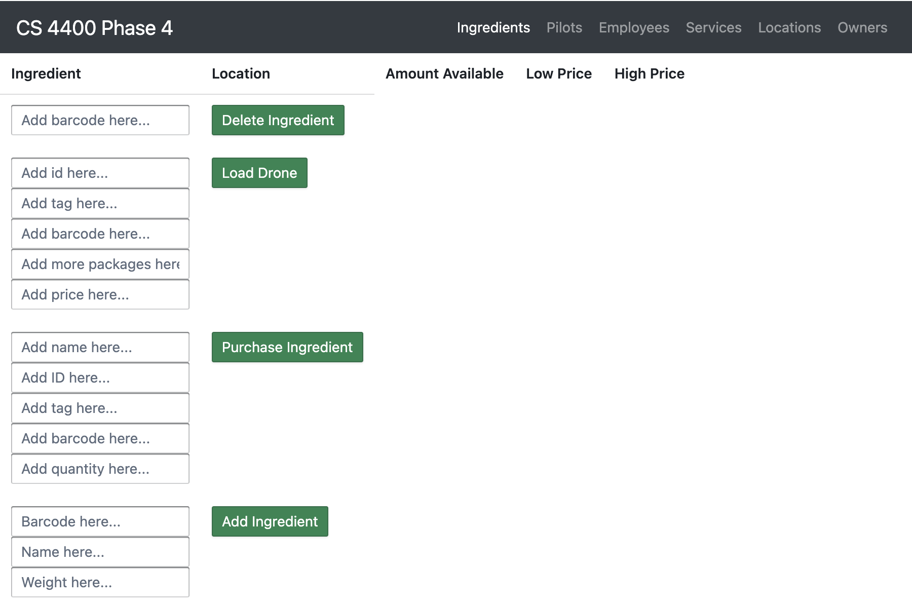

I am a Computer Science student at Georgia Tech concentrating on Artificial Intelligence and Modeling + Simulation for my undergraduate degree, with an expected graduation date of December 2023. Summer 2021, I was fortunate to serve as a Data Science Intern at Innception and a Flight Test Intern at Comet. Summer 2022, I worked as Software Engineer Intern at Intuitive Surgical, creating a framework that generates and runs a Tavern Test file through the company's Jenkins Pipeline, hence automating the process of API testing organization-wide. This Summer, I worked at Skytap, where I developed models, such as Polynomial Regression, Exponential Smoothing, and Autoregressive Integrated Moving Average, to forecast resource (CPU, RAM, and storage) utilization using historical utilization and sales data under the guidance of my manager Lara Martin. At Georgia Tech, I am a Machine Learning research lead working on CNN, Binary Classification, and Markov models to classify football play types in the Stadium-Internet of People and Things project led by Dr. Coyle. On campus, I am also involved in Big Data Big Impact, The Agency: AI/ML Club, Residence Life, and First-year Activities Board. I am currently serving as a Teaching Assistant for Professor Mahdi Roozbahani's Undergraduate and Graduate Machine Learning courses at Georgia Tech. In my free time, I love to watch and play a multitude of sports, a key part of my ultra-competitive nature. As the perfect next step in my career, I want to achieve my Master's of Science in Computer Science at UC Berkeley.
Drove 22.8% reduction in config issues for 1800 devs via Golang diagnostic application and slashed dev issue resolution time by 54% via automated file generation and new standardized reporting procedure
Automated migration of 200+ apps from old (Jenkins/uDeploy/Concourse) to new cloud infrastructure (Jenkins Core/Terraform) and reduced migration onboarding from 4-6 weeks to 1-3 days using AWS Step Function/DynamoDB/Lambda/CloudWatch
Eliminated 100+ hours of manual effort annually by updating MongoDB credit card database using scraped data and reduced integration delay from 1 week to 1 day by creating automated pipeline to notify developers of card issues
Optimized path-planning algorithm for high-dimensional robotic arms by leveraging convolutional neural networks. Generated 10,000 workspaces & configuration spaces by engineering robotic arm graphical simulator using Python. Designed convolutional neural network using Keras & TensorFlow to decrease path-planning time versus Dijkstra’s
Bachelor of Science in Computer Science, Artificial Intelligence and Information Internetworks Concentrations. Relevant Coursework: Advanced Algorithms, Data Structures & Algorithms, Systems & Networks, Computer Architecture, Object-Oriented Programming, Software Design, Discrete Math.
Whitepaper covering the work of my Smart Stadium Machine Learning research team, where we aim to classify play type given the play clip and past play information for American football.
Slide deck highlighting the work of the Parkinson's Detection Team, a project I led over the last 1.5 years as part of Georgia Tech's Big Data Big Impact club. The project leverages biomedical voice data and handwriting data to predict whether a subject has Parkinson's.